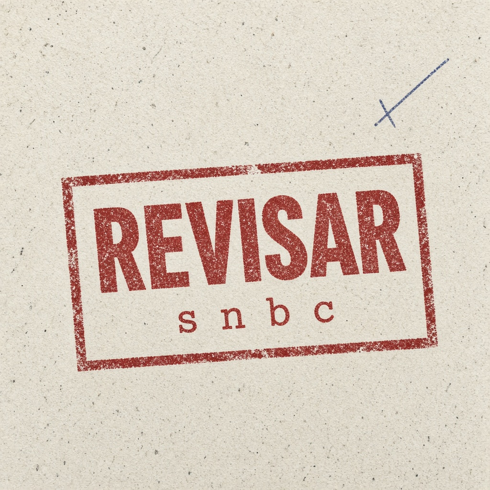

Así se muestra tero: una hoja, no un dashboard. El sello lo pone la
persona.

REVISAR
tero — agente docente
tus fuentes, tu criterio
5° básico · Ciencias Naturales · 90 min
tero lee tu carpeta, propone un plan y deja un
borrador en la puerta. No escribe en fuentes/. El
modelo de esta hoja es tero-offline: un Strands
Model scripted, no un Bedrock disfrazado. AgentCore no
es el producto.
Avisos a la vista — parafraseo, evidencia flaca, OA raro — y
s sigue abierto. Eso no es un bug. Es la tesis.
tero·tero-offline·home·rumbos 1–4 · puerta s n b c · ? ayuda